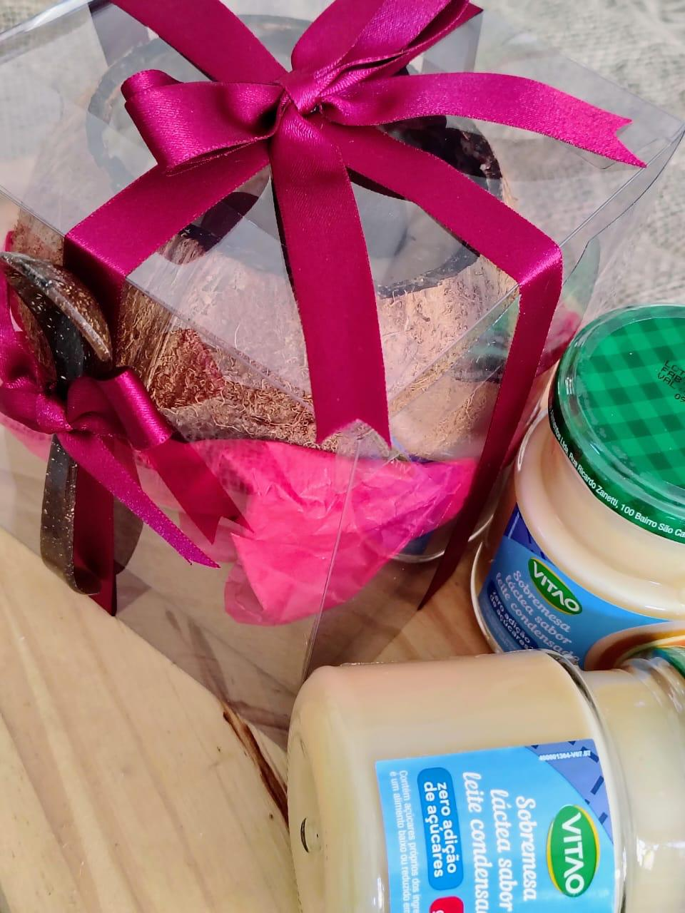
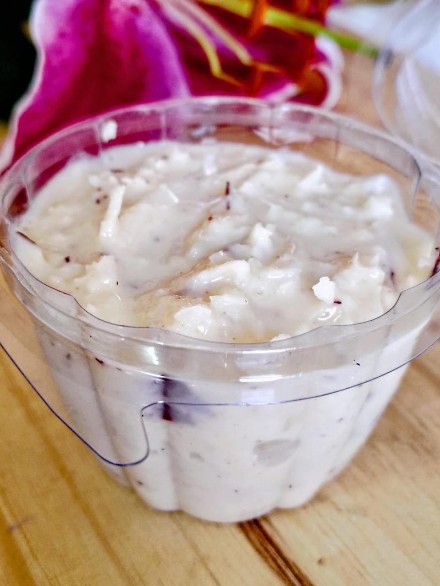
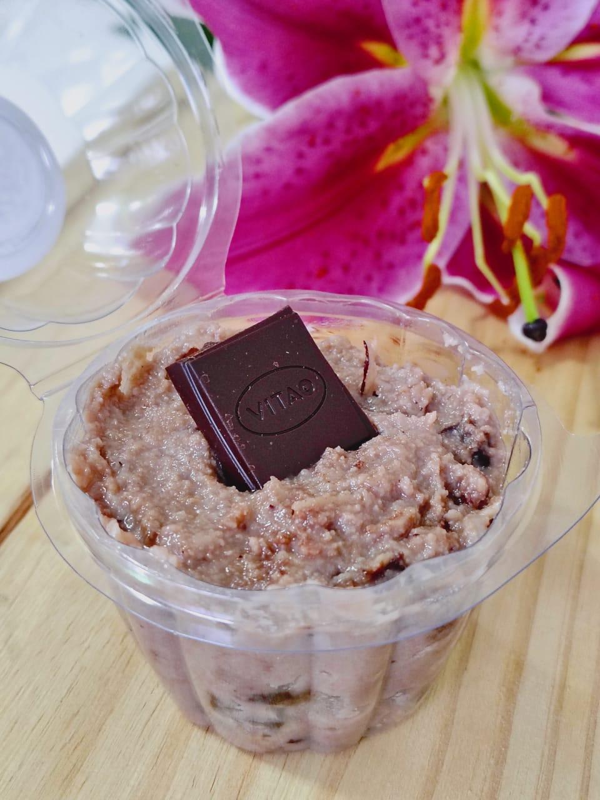
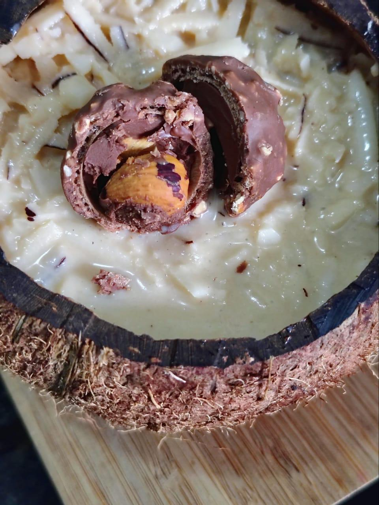

Cocada de Maracujá Fit
O contraste inigualável do azedinho do maracujá fresco com a doçura suave do coco. Leve, refrescante e sem açúcar.
Descubra a cremosidade inconfundível das nossas cocadas preparadas com coco fresco e muito afeto. O equilíbrio perfeito entre o saudável sem açúcar e a indulgência gourmet!

Dia dos Pais - Dia das Mães - FInados
Escolha sua versão favorita: desde as opções levinhas sem açúcar até as criações gourmet sofisticadas para momentos especiais.
O contraste inigualável do azedinho do maracujá fresco com a doçura suave do coco. Leve, refrescante e sem açúcar.
O contraste inigualável do azedinho do maracujá fresco com a doçura suave do coco. Leve, refrescante e sem açúcar.
O contraste inigualável do azedinho do maracujá fresco com a doçura suave do coco. Leve, refrescante e sem açúcar.
O contraste inigualável do azedinho do maracujá fresco com a doçura suave do coco. Leve, refrescante e sem açúcar.
O contraste inigualável do azedinho do maracujá fresco com a doçura suave do coco. Leve, refrescante e sem açúcar.
O contraste inigualável do azedinho do maracujá fresco com a doçura suave do coco. Leve, refrescante e sem açúcar.
O contraste inigualável do azedinho do maracujá fresco com a doçura suave do coco. Leve, refrescante e sem açúcar.
O contraste inigualável do azedinho do maracujá fresco com a doçura suave do coco. Leve, refrescante e sem açúcar.

Feita com leite condensado zero açúcar especial. Mantém a textura aveludada e o sabor autêntico sem pesar na dieta.

Sofisticação pura! Coco ralado envolto no toque cremoso de licor Amarula e coberto com maciço de chocolate nobre.

Apresentação deslumbrante servida na própria casca de coco artesanal, acompanhada por recheio cremoso e bombom crocante.
Não usamos coco desidratado industrial. Nossa matéria-prima é fresca e ralada no dia do preparo.
Desenvolvemos receitas Fit com adoçantes de altíssima qualidade que não deixam residual amargo.
Receitas autorais sofisticadas como Amarula, Maracujá e combinações gourmet inesquecíveis.
A Flor de Bistrô nasceu da paixão em reinventar o doce tradicional brasileiro. Unimos a memória afetiva da cocada com técnicas e combinações refinadas da gastronomia moderna.
Seja para matar a vontade de um doce na dieta ou para presentear quem você ama com uma sobremesa especial, cuidamos de cada detalhe do preparo até a embalagem!
Faça seu pedido diretamente pelo nosso WhatsApp. Atendimento rápido e entregas preparadas com todo carinho!
Pedir pelo WhatsApp (11) 93734-0123